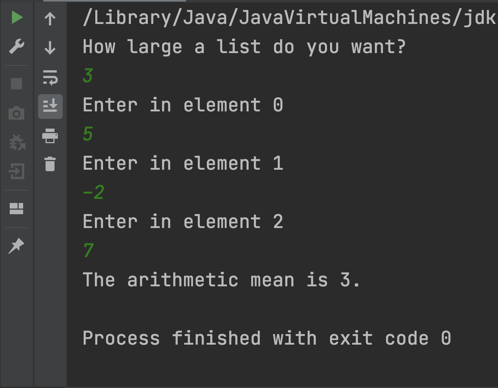

CS II
Professor Abdul-Quader
15 February 2021
Code Snippets
What does the code do? It computes something, what does it compute?
Scanner sc = new Scanner(System.in);
System.out.println("Type in a positive integer");
int input = sc.nextInt();
int t = 0;
for (int i = 0; i < input; i++) {
t += i;
}
System.out.println(t);Code Snippet 2
Scanner sc = new Scanner(System.in);
System.out.println("Type in a positive integer");
int input = sc.nextInt();
int t = 1;
for (int i = 1; i < input; i++) {
t *= i;
}
System.out.println(t);Code Snippet 3
Scanner sc = new Scanner(System.in);
System.out.println("Type in a positive integer");
int x = sc.nextInt();
System.out.println("Type in another integer");
int y = sc.nextInt();
int t = 1;
for (int i = 0; i < y; i++) {
t *= x;
}
System.out.println(t);Project 1
- Due Sunday, March 7, 11:59 PM
- Description on Moodle
Grading scheme
- Compilation: 20 points if the program compiles.
- Correctness: 55 points for correctness.
- 15 points if the program never crashes (on any input).
- 25 points if it provides a valid path every time
- 15 points if those paths are optimal (shortest)
- Style: 25 points. Your code should be readable.
- Should be clear what you’re trying to do.
- Give your variables clear names.
- Write comments explaining why you are doing what you are doing.
Submission
- Write the code in IntelliJ
- Export the entire project to a zip file.
- File: Export to zip file
- Name the file: your-last-name_project1.zip
- Upload the project to Moodle.
Getting Started Tips
- Validate input.
- You know how to do this!
- You did this on the “input 1 to 10” exercise.
- Start with simple ideas
- if we need to go east, and can go east, then go east
- if we need to go west, and can go west, go west.
- etc.
- Start early, test your code often.
- Find cases that don’t work, fix them, repeat.
Arrays
int[] x = new int[7]; // creates an array of 7 integers
x[0] = 1; // first element of the array is x[0]
for (int i = 1; i < 7; i++) {
x[i] = i * x[i-1];
}
System.out.println(x[6]);- array: sequences of values of the same type
- above: array of 7 integers
- in brackets: index
- first index is 0, last index is size - 1
References

When we declare a new array, we get a reference to a section of memory that is allocated (on the heap). The value of the array variable is technically the memory address that it is referring to.
Side effect: what does the following output?
int[] x = new int[10];
System.out.println(x);Snippet
int[] x = new int[1];
x[0] = 10;
int[] y = new int[1];
y[0] = x[0];
if (x == y) {
System.out.println("Equal.");
} else {
System.out.println("What?");
}Draw a memory diagram. What does this output?
Exercise
Declare two integer arrays of size 2. Ask for the user to input into each of the elements. Compare the two arrays and determine if they have the same numbers in the same order.
Example input / output
Loops
Use “length” property to tell the size of the array:
int[] numbers;
// some code that initializes numbers
...
// add up all the elements of numbers
int total = 0;
for (int i = 0; i < numbers.length; i++) {
total += numbers[i];
}
System.out.println("The total is " + total);Foreach loop
String[] names;
// some code which initializes names
for (String name : names) {
System.out.println(name);
}If we just need the objects in the arrays, and not the index, this is helpful.
Technically called “enhanced for loop.” (Usually just referred to as “foreach”)
Arrays of arrays
We can create arrays of any type we like, using this [] syntax:
int[] x = new int[5]; // creates an array of integers
String[] s = new String[10]; // creates an array of stringsQuestion: What about arrays of arrays?
Multidimensional arrays
Yes, it works!
int[][] x = new int[][5];
for (int i = 0; i < 5; i++) {
x[i] = new int[3]; // each element of x is also an array.
for (int j = 0; j < 3; j++) {
x[i][j] = i*j;
}
}
Take a minute to draw a memory diagram for this.
Exercise
Write a program which asks the user to input the size of a list. Then ask the user to input an integer for each element of the list, and output the arithmetic mean of the list (truncated if it is a decimal). Recall: the arithmetic mean of a set of numbers is the sum of all the numbers divided by the number of numbers.
Example input / output
